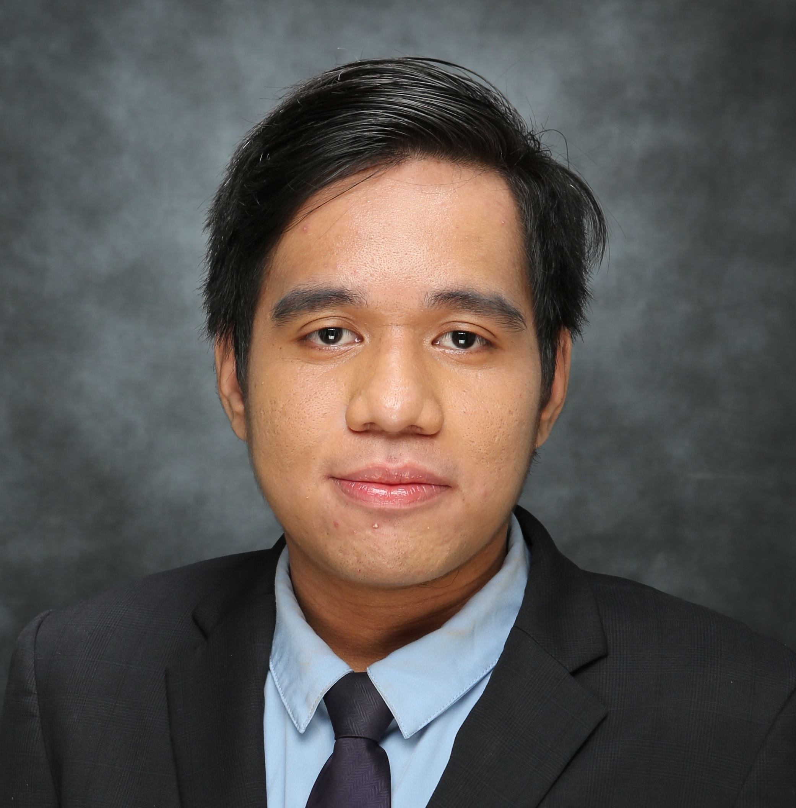
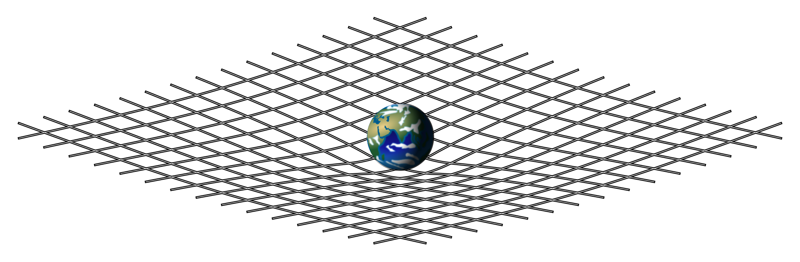
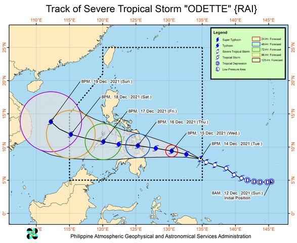
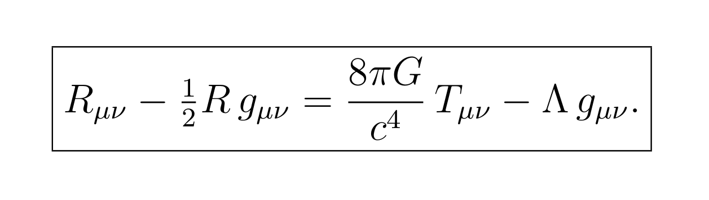
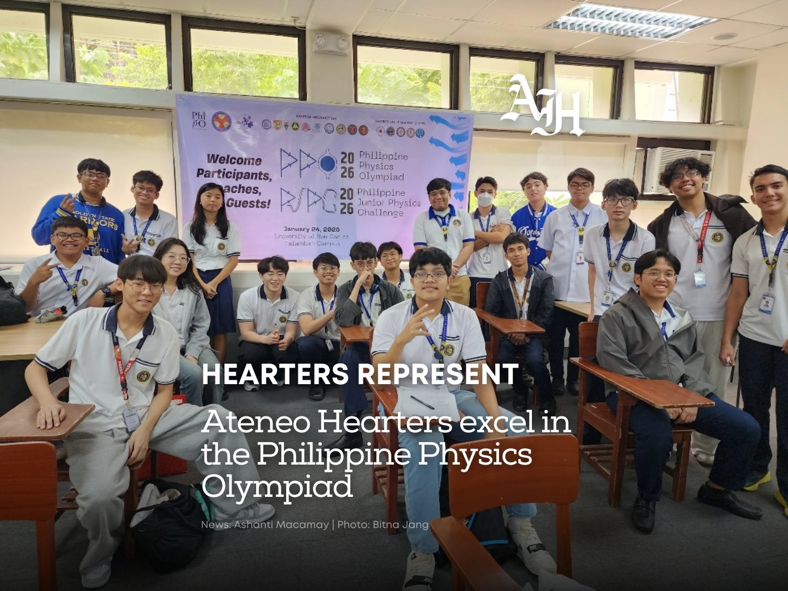
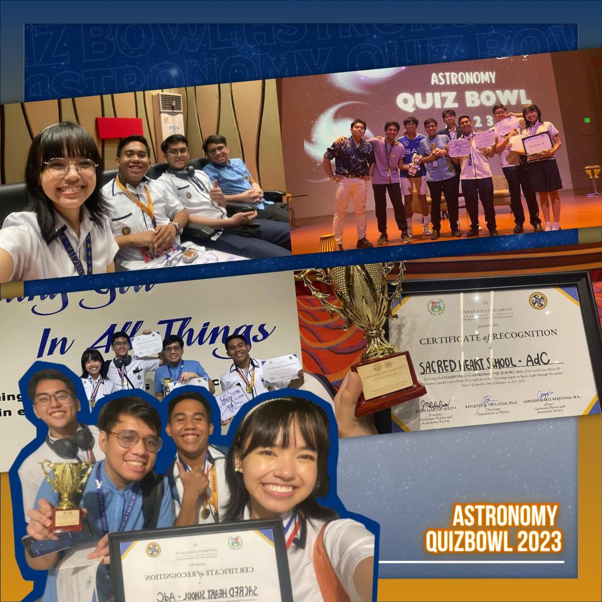
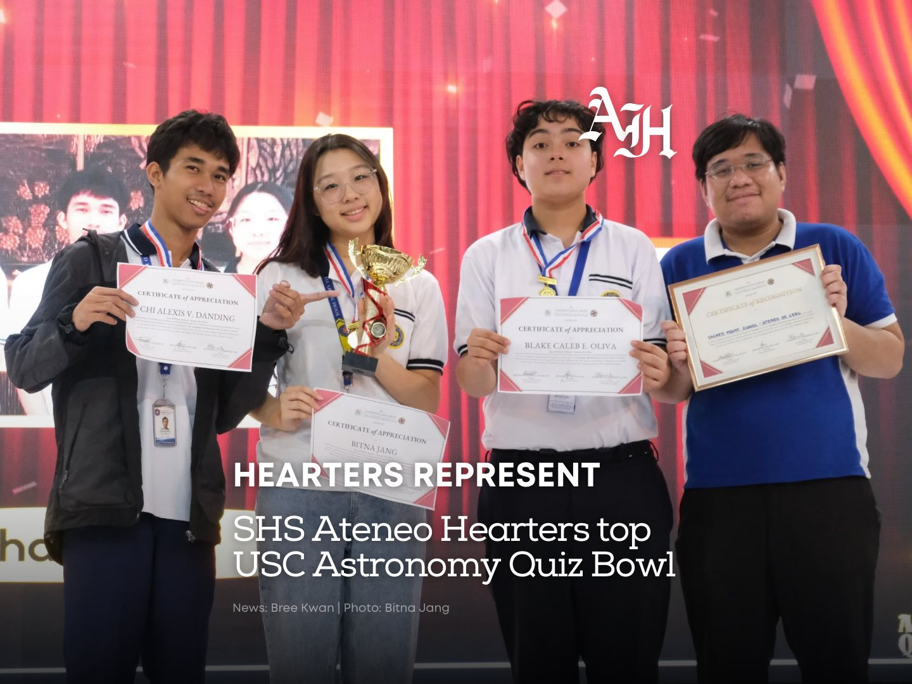
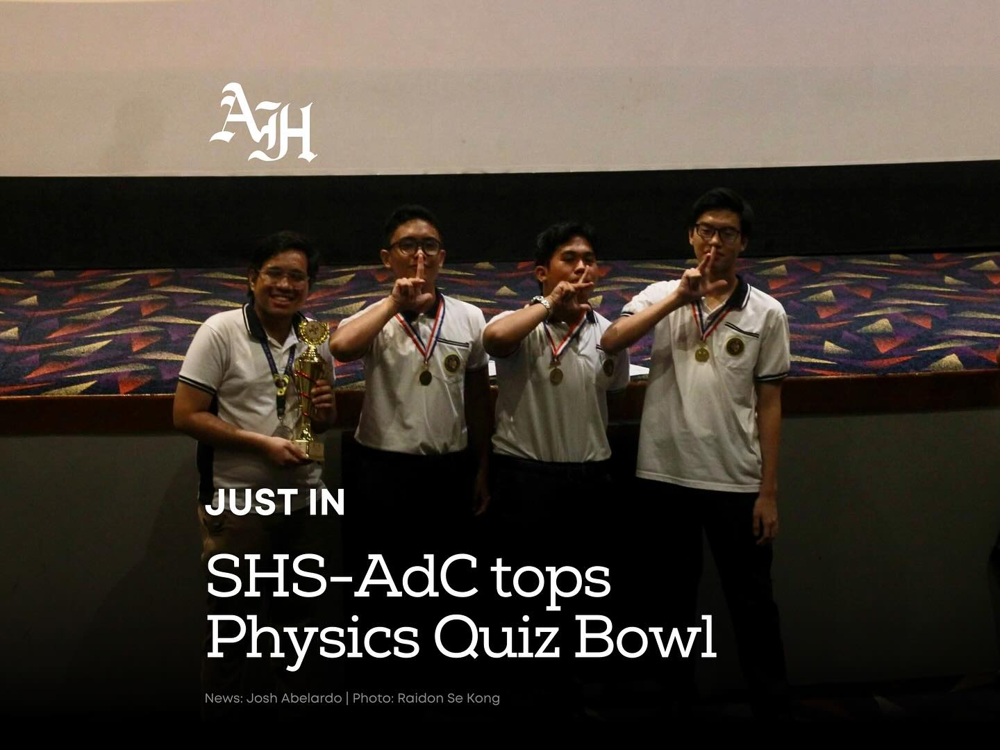
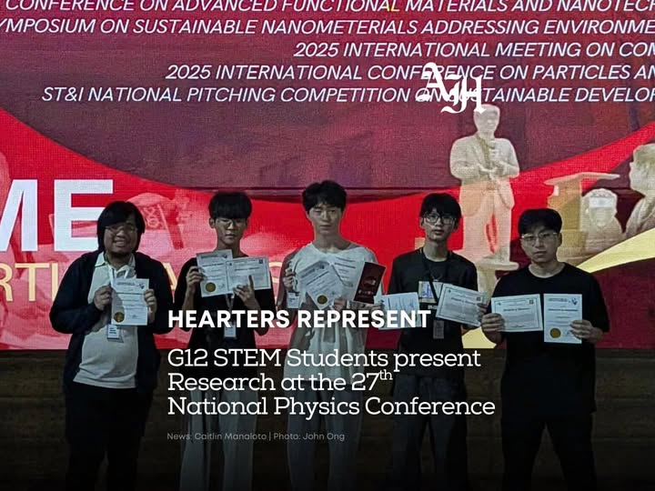

Aspiring Theoretical Physicist
I am an incoming Postgraduate Diploma student at the Abdus Salam International Centre for Theoretical Physics in the High Energy, Cosmology, and Astroparticle Physics field.

About Me
I grew up in Carcar, a small city in southern Cebu, Philippines. I am a former out-of-school youth who left formal schooling after eighth grade at the age of 15. I returned to formal education at the age of 18 in 2019 through the Alternative Learning System (ALS), a program in the Philippines designed to give a second chance to out-of-school youth. Through the ALS Accreditation and Equivalency (A&E) exam, I was able to bypass four years of secondary school, entering directly into a BS in Applied Physics at the University of San Carlos (USC) in Cebu in the same year, without having seen calculus or a physics equation on a board before. I finished my bachelor's degree at USC in June 2023 as a DOST-JLSS scholar.
Following my bachelor's degree, I fulfilled a mandatory national service obligation as a high school physics teacher at Sacred Heart School - Ateneo de Cebu from 2023 to 2026, where I taught physics and coached students in various physics and astronomy competitions. After three years of fulfilling this obligation, I will be joining the Abdus Salam International Centre for Theoretical Physics (ICTP) in Trieste as one of ten students selected globally for the HECAP Diploma program starting September 2026. I am the first student from the University of San Carlos and from Cebu province to be accepted into this highly competitive field.
Growing up in Carcar, the concept of becoming a research scientist was virtually non-existent. Beyond my own research trajectory, I want to establish the precedent of a theoretical physicist from my hometown, proving to future students in the provinces that a path into global frontier research is a viable and achievable reality.
Research Interests
The renormalization structure of quantum fields in curved backgrounds is genuinely less settled than in flat spacetime. Observer-dependent vacua, stress-energy ambiguities, and the trans-Planckian problem in inflation point toward something incomplete in our current framework, an incompleteness that I find motivating.
The field-theory approach to gravity (constructing geometry from physical reasoning rather than imposing it as a prior mathematical framework) resonates with how I understand things most deeply: not simply that a structure is what it is, but why it has to be that way.
The thermal history of the universe, the nature of dark matter and dark energy, and the observational signatures of high-energy physics in the CMB. The gravitational wave window opened by LIGO represents an exciting frontier for early-universe physics I am eager to engage with.
My exposure to quantum gravity and compact object astrophysics was on the Generalized Uncertainty Principle (GUP) and how it modifies the structure equations of white dwarfs and neutron stars. It remains a field I intend to return to.
Selected Highlights
Some of what defines my trajectory doesn't fit neatly into a CV. These are the moments and projects that reveal something about how I approach a problem, and what I do when the infrastructure around me doesn't exist yet.
To bridge the gap between the Applied Physics curriculum and the foundations I needed, I regularly attended advanced courses outside the curriculum. In some of them, I attended consistently enough to be included in assessments, using them to validate my self-studies against graduate standards.
The most notable was a graduate General Relativity course taught by Dr. Danilo M. Yanga, known for his unforgiving theoretical rigor. It was memorable because right before the semester, Typhoon Odette left Cebu without power for two months. In that enforced stillness, I worked through the physical math and GR textbooks that I had. The class became the ultimate test of that isolated study, and I completed all coursework to the standard as the enrolled M.Sc. and Ph.D. students.
During my fourth year, I also attended Dr. Christopher Bernido's graduate Standard Model class through the midterm period, before prioritizing my undergraduate thesis work.



I always held the belief that talent has always existed in the provinces, and that it just needed someone to show up and mentor them properly. Beyond teaching my regular classes, I consistently trained and coached students for various physics and astronomy competitions. Eventually, this initiative evolved into an official program called ASCEND: Physics, which bridges the gap between high school, university, and Olympiad-level physics and astronomy. Over my three years running the program, we achieved great success in various local and national competitions.




Beyond competition preparation, I wanted to introduce my students to actual scientific inquiry and scientific thinking. My students presented their work on "Measurement of g using smartphone and Doppler-based bifilar pendulum system" in a subplenary oral presentation in Samahang Pisika ng Visayas at Mindanao (SPVM) 2025, a national physics conference in the Philippines.

Education & Experience
Abdus Salam International Centre for Theoretical Physics (ICTP) · Trieste, Italy
One of 10 students selected globally for the High Energy, Cosmology, and Astroparticle Physics track. 5th Filipino admitted to HECAP since the program's inception; first from the University of San Carlos and Cebu province.
Sacred Heart School – Ateneo de Cebu · Mandaue City, Philippines
DOST scholarship return service obligation. Instructor for General Physics 1 & 2 and Engineering Physics. Founded and led ASCEND: Physics enrichment program. Head Coach, Physics & Astronomy Olympiad Team.
University of San Carlos · Cebu City, Philippines
GPA: 1.42/1.00
Adviser: Dr. Danilo M. Yanga
Calculation of the Eliashberg Function of Particles in Graphene in the Migdal-Eliashberg Theory of Superconductivity. Analytically derived expressions for the Eliashberg function using Matsubara Green's function formalism. 2nd Place Best Thesis Award.
In astrophysics, the Matsubara formalism I used to compute finite-temperature self-energies in graphene is the Euclidean-signature analogue of the thermal field theory techniques used in early-universe thermodynamics and neutron star structures.
Contact
In the coming months, I plan to apply to PhD programs in theoretical physics for Fall 2027 entry. I am particularly interested in groups working on QFT in curved spacetime, gravitational wave phenomenology, and early-universe cosmology.
I am also happy to hear from researchers, students, or educators interested in building physics culture in the Global South.
From September 2026, I will be in residence at ICTP Trieste as part of the HECAP Diploma programme.